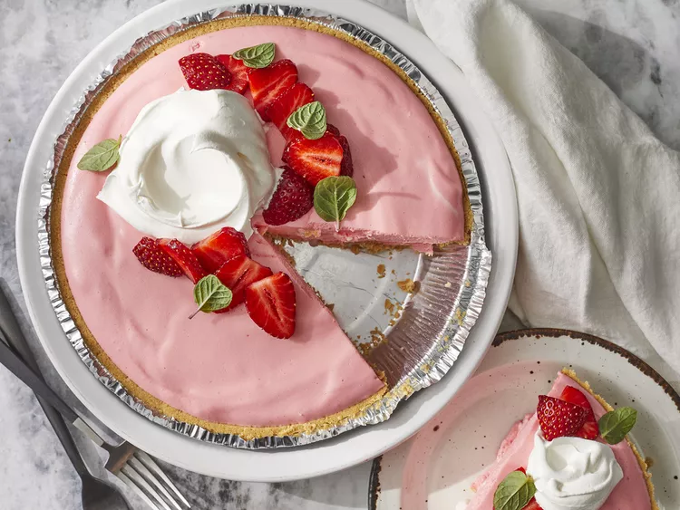

Cheesecake

Description
Cheesecake is a dessert made with a soft fresh cheese (typically cottage cheese, cream cheese, quark or ricotta), eggs, and sugar.
It may have a crust or base made from crushed cookies (or digestive biscuits), graham crackers, pastry, or sometimes sponge cake. Cheesecake may be baked or unbaked, and is usually refrigerated.
Ingredients
- 1 (3 ounce) package strawberry-flavored gelatin (such as Jell-O®)
- 1 cup boiling water
- 1 package cream cheese
- 1 cup white sugar
- 1 teaspoon vanilla extract
Steps
- Dissolve strawberry gelatin in boiling water in a bowl; cool in refrigerator until thick, but not set, about 20 minutes.
- Beat cream cheese, sugar, and vanilla extract together in a bowl until smooth.
- Beat evaporated milk in a separate bowl with an electric mixer until whipped and thick. Gradually pour strawberry gelatin mixture into evaporated milk, beating constantly. Fold cream cheese mixture into gelatin-milk mixture to form cheesecake filling.
- Set graham cracker crust on a baking sheet or plate to maintain stability. Pour cheesecake filling into crust. Refrigerate until cake is set, at least 3 1/2 hours.